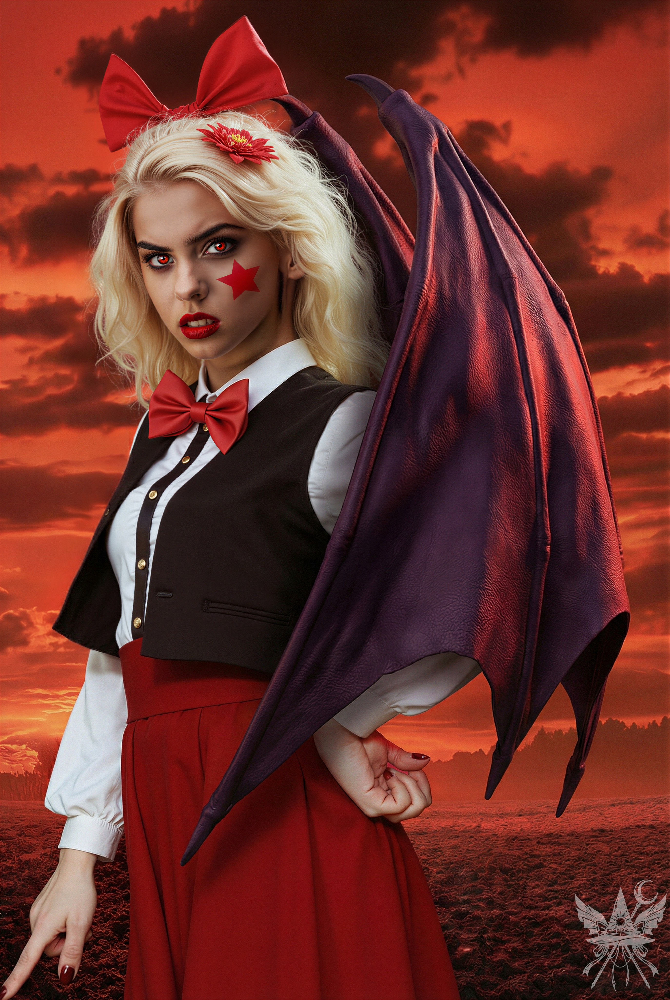
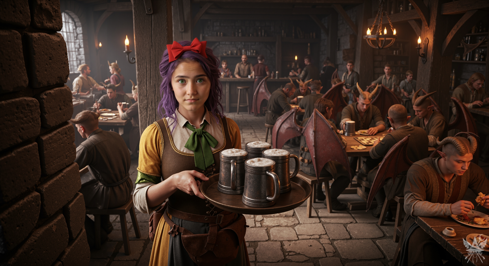
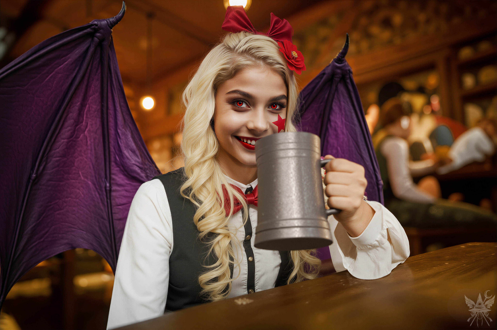

第42章 神出鬼没のエリス
狂気渦巻く魔界の空気――この歪な環境に順応しつつある自分に気付きながらも、メデアは冷静に最善手を選択した。空き地の上空を旋回する巨大な五つの魔眼が放つ、鼓膜を圧迫するような低周波のハム音。圧倒的な質量の殺意を背に受け、差し出された未知の少女の手を振り切って、崩れかけた薄暗い空洞――マイが「犬小屋」と呼んだ場所へ飛び込む。
「待ってー！」
という甲高い叫び声が背後から追ってくるが、構っている余裕はない。燃え盛る周囲の草木が爆ぜる熱波が、肌をジリジリと焦がしていた。
息をつく間もなく、巨大な眼球の一つが入り口を塞ぐように侵入してきた。不気味な気配が、埃っぽい屋内を容赦なく制圧する。咄嗟に「追い払い」の呪文を紡ぐが、淀んだ大気の中で僅かに空気が揺らいだだけで、眼球は瞬き一つしなかった。
（馬鹿ね。こんな高位の化物に、下級の呪文が通じるはずがない……。むしろ刺激しただけかしら）
乾いたレンガと古紙の匂いが入り混じる室内。周囲には、山積みにされた古い書物、乾燥した植物、そして得体の知れないガラクタの山が乱雑に散らばっている。
奥へと続く狭い通路へ後ずさるメデアを、巨大な視線がじっと見据え、ゆっくりと距離を詰めてくる。
空気が焦げるような、鈍い『シュー』という摩擦音が響いた。高エネルギーが収束する気配。直撃を受ければ炭化は免れない。メデアは床に落ちていた、ひび割れた真鍮の枠を持つ手鏡を無造作に掴み上げ、盾のように構えた。

直後、大気が爆発した。熱線が鏡面に激突し、凄まじい反動がメデアの腕の骨を軋ませる。反射した力の奔流が空間を歪め、衝撃波が廃墟全体を揺るがした。
鏡に弾き返された自らの熱線をまともに浴びた怪物は、甲高い悲鳴のような異音を上げ、火の粉を撒き散らしながら狭い室内でのたうち回った。熱線の余波がガラクタの山に直撃し、焦げた樹脂の異臭と黒煙が一気に充満する。幾度か乱反射した光線から身を守るうち、小屋の中は息をするのも困難なほどの灼熱のオーブンと化していた。
手狭な空間では分が悪いと悟ったのか、あるいは単純に痛みに耐えかねたのか、怪物は低い天井の瓦礫を破壊しながら屋外へと逃げ去っていった。
静寂が戻った廃墟で、ローブの袖を口元に押し当ててむせ返る。崩れた天井の隙間から、勢いよく煙が吸い出されていく。
外からは、冷気を伴った吹雪の音と、苛立たしげな少女の怒声が聞こえていた。
「ユーマちゃん！ 何やってんのよ！ 悪い子ね！ アタシを食べようなんて思わないでよね！ 美味しくないんだから！」
「左から回れ、バカ！」
マイの怒鳴り声が響く。どうやら、容赦なく攻め立てているらしい。
「……逃げやがった、クソが」
「もういいわ、放っておきましょ。どうせアタシ達には勝てないんだし」
二人のやり取りを遠くに聞きながら、メデアは小屋の中央へ歩み寄り、黒煙を上げるゴミの山を冷ややかに見下ろした。
そして、ある一点で足を止める。
「嘘……私の魔導書……！」
先祖代々受け継いできた分厚い装丁は、金箔の装飾を僅かに残すのみで、ページは完全に灰の山と化していた。取り返しのつかない喪失。しかし、その事実に感情を波立たせるよりも早く、背後から荒々しい足音と共に熱を帯びた空気が流れ込んできた。
「もう！ ここに来るなって言ったじゃない！ アタシの大事なコレクションが台無しよ！」

焦げ臭い風を巻き起こしながら飛び込んできた少女は、詰め寄るなり焼け焦げた魔導書の残骸をひったくるように奪い取った。理不尽極まりない怒りの圧力が、肌をビリビリと刺す。
「あなたのコレクション？ よく言うわね。私の魔導書がその一部だとでも言うつもり？」
メデアは一歩も引かず、冷徹な気配で言葉を返す。
「そもそも、あなたがどこかから盗んできたんでしょう？」
「何言ってんのよ、この人間！ 今朝、氷雪世界で見つけたの！ あんたの物だって、どうして分かるわけ？」
「でも、結局あなたのペットが燃やしてしまったじゃない」
呆れ果てた溜息を一つこぼす。
「ユーマちゃんのこと？ ハハ、違うわよ。ユーマちゃんはペットなんかじゃないの。ただのマスコットキャラみたいなものよ。時々、今日みたいに手に負えなくなることもあるけど……、たいていは、からかうのが楽しいのよ」
少女はふいとそっぽを向き、燃え盛るゴミの山を物憂げに眺めた。
「ねえ、私、もう行くから。誰が誰の何を壊したかは、そっちで勝手にやって」
小屋の外から、マイの声がした。
「ちょっと待ちなさいよ、この氷女！」
少女が血相を変えて外へ飛び出す。メデアも静かにその後を追った。崩れた石柱のそばに、マイが立っていた。
「何よ。勝手にアタシだけの大事なゴミ捨て場に入って、めちゃくちゃにしやがって」
「あんたの場所だなんて、どこにも書いてないわ。メデアがあんたに会わせてくれって言うから連れてきただけ。まだ氷漬けになってないことに感謝しなさい」
マイはそう言うと、ふわりと宙に浮き上がり、こちらへ少し近づいた。
「勝負したくなったら、いつでも来なさい。ただし、そいつは抜きでね」
一瞥をよこし、そのまま灰色の空の彼方へと消えていく。
取り残された廃墟には、焦げた草の刺激臭と重い沈黙だけが降り積もる。
少女は再び小屋に戻ると、苛立ちをぶつけるように焼け焦げたガラクタを蹴り散らし始めた。服の残骸、燃えた本、そしてドロドロに溶けたノートパソコンらしき塊。
「もう！ この機械、もともと壊れてたのにぃ……なんでこんなものがぁ……ちくしょー！ どうしてこうなるのよぉ！」
癇癪を起こした子供のように地団駄を踏み、自身の髪を力任せに掻き毟る。
「覚悟しとけよ、人間！ 全部弁償してくれないと……！」
「冗談でしょう？ あなたの物が燃えたのは、まるで私のせいみたいじゃない。ちなみに、私の家宝の魔導書も燃えてしまったのよ」
冷静に事実を突きつける。だが、この感情の起伏が激しい悪魔とは、ここで決裂するよりも利用価値があると判断した。
「でも、そんなに落ち込んでいるなら、新しいコレクションにプレゼントをあげてもいいわよ？」
「え、何かくれるの？ アタシに？ ホント！？ 見せて見せてー！」
怒りはどこへやら、たちまち喜色を浮かべてすり寄ってくる。
「この護符よ。詳細はよくわからないけれど、持ち主の力を増幅させるらしいわ」
ポケットから、静かなる護符を取り出して見せた。
「わぁ、なんて綺麗なの！ ありがとう、人間！ エリスはあんたのこと、許してあげるわ！」
ひったくるように護符を奪い取ると、エリスと名乗った少女はそれを素早く衣服のどこかへしまい込んだ。
「ちなみに、アタシはエリス。神出鬼没のエリスって呼ばれてんの！」
（『神出鬼没』のエリス……。ただ単に、自分の居場所すら把握できていないだけじゃないのかしら）
内心で皮肉を呟きながら、表面上は優雅に微笑んでみせる。
「メデアよ。よろしくね」
「メデア……？ そーいや、いい名前ね。ゾッとするわ。まるで……自分の子供を殺して、その頭蓋骨を大釜でグツグツ煮込んだ女みたい」
（まさか、古典のメーデイアを知っているわけ？ いや、魔界の悪魔がそんな知識を……ただの偶然かしら）
「残念ながらハズレよ。そんな退屈な真似は性に合わないわ。ところでエリス、一つお願いがあるのだけれど」
「どんなお願い？ さっさと聞いちゃおーっと。でも、お金は貸さないわよ。肉体関係もなしね！ ……まあ、でも……」
エリスは値踏みするように、じっと全身を観察してきた。
「実は、魔界で強力なアーティファクトを探しているの。アメジストの形をした、このくらいの石。何か心当たりはないかしら？」
指先でくるみほどの大きさの輪を作って見せる。
「強力なアーティファクト？ 魔界にそんなものがあったら、とっくにアタシが手に入れてるわよ！ でも、アメジストなんて知らないわね」
「そう。エリスなら何か知っているかもしれないと思ったのだけれど……。アメジストを感じ取る力があるはずなのに、今は全く機能しないのよ。一体どこを探せばいいのか……」
「あーあ、それなら簡単よ、メデっち。あんたがまだ全然酔ってないからだわ。街の居酒屋に行こーっと！ アタシのおごりでね。たっぷり飲んだら、色んなすごいものを感じられるようになるわよ〜。……あーあ！ 二人とも大事なものを失くしちゃったし……、もう飲むしかないわね！！」
（呆れた論理ね。でも、魔界に詳しい案内役としては役に立つかもしれない。仕方ない、付き合ってあげましょう。上手く乗せれば、失った魔導書の代わりになる戦闘魔法の知識も引き出せるかもしれないし）
「街？ 魔界に街があったのね」
「あら、知らないの？ じゃあ、メデっちを魔界のホットスポットにご案内しなきゃ！ ここの中心地、華麗なる魔都市よ！ で、メデっちは飛べるの？」
「自力では飛べないけれど、便利な道具があるわ」
ポケットから青く輝く卵を取り出し、表面を軽く摩擦する。真新しいスノーレーサーの意匠を残した自転車が、ふわりと実体化して着地した。
「何それ！？ ちょーだい！ 売ってよ！ くそっ、欲しい！」
物欲を丸出しにして、周囲をぐるぐると回り始める。
「ごめんなさいね、今は私が使っているの。それに、エリスには立派な翼があるでしょう？ でも、もし飛び方のコツを教えてくれたら、考えてあげてもいいわよ」
サドルにまたがり、金属のペダルに足を乗せた。
「わかったわ。教えてあげてもいいけど、飛んだことない人には難しいのよ。時間がかかるわ。でも……マジで欲しいなぁ、くそっ！」
未練がましく見つめながら、エリスは力強く空へと羽ばたいた。
「神出鬼没のエリスについてきな！」
荒涼とした大地を進む。道端に生える奇妙な植物は、車輪がかすめる度に鋭い歯を打ち鳴らすような乾いた音を立てて閉じた。凍りついたまま転がっている小悪魔たちの残骸を避けながら、先導する背中を追う。地平線の先には、毒々しい赤紫色の空を突き刺すように、巨大で威圧的な城塞のシルエットが霞んで見えていた。
やがて、硬い土の地面が規則的な石畳へと変わり、周囲の空気が一変した。
立ち並ぶ重厚な建築群。見上げれば、中世の街並みを思わせるスレート屋根と、無数の尖塔が立ち並んでいる。道行く者たちは一見すると人間に近いが、頭部に角を持つ者、蝙蝠のような気配を背負う者など、明らかに異質の生態系を築いていた。

湿り気を帯びた石畳に、魔法のランプが放つ青緑色やオレンジ色の人工光が反射し、赤い空との強烈なコントラストを生み出している。市場の喧騒、得体の知れない肉の焼ける匂い、そして奇妙な言語の飛び交う活気。
メデアは目立たぬよう自転車を卵の形に戻して懐にしまい、この混沌とした異界の都市を静かに観察した。ゴミを漁る三つ首の獣や、逆さにぶら下がる男の姿さえ、ここでは日常の風景の一部として溶け込んでいる。
「メデっち、こっちこっち！ ほらほら、早く！」
手を引かれるまま、狭い路地裏へ足を踏み入れる。そこにあったのは、
『人間の味わい』
という悪趣味な冗談のような看板を掲げた居酒屋だった。
重厚な木の扉を押し開けると、焦げた脂と発酵した酒の強烈な臭いが、むせ返るような熱気と共に顔を打った。薄暗い店内では、いかつい気配の魔族たちがテーブルを囲んでジョッキを打ち鳴らし、大声で騒いでいる。
エリスは慣れた様子で空席に陣取ると、給仕を呼び止めた。
「あら、エリス？ またツケかい？」
冷淡な気配を纏ったウェイトレスが、事務的な視線をエリスへ向けた。
「いつもちゃんと返してるじゃない！ 今はちょっと懐が寂しいだけよ。でも、大丈夫、もうかる計画があるの」
エリスはメデアに向かって意味ありげにウィンクを飛ばす。
「後で素敵なチップを弾むから、今回は見逃してちょうだい！ エリスが嘘をつくわけないでしょ？」
「また何か企んでるんじゃないでしょうね、エリス？」
「光子、この人はアタシの大切なゲストなの。ちゃんと扱ってあげてね。遠くからわざわざ来てくれたのよ。いいわね？」
ウェイトレスは小さく息を吐き、メデアの方へ向き直った。
「かしこまりました。ご注文は？」

「そうね……何か、お腹を満たせるものはあるかしら？」
異界の食物に対する警戒心を悟られぬよう、あくまで自然なトーンで尋ねる。
「それでしたら、こちらをどうぞ」
無愛想な手つきで渡された巻物のメニューには、背筋が寒くなるような悪趣味な料理名がズラリと並んでいた。
居酒屋
『人間の味わい』
―― 人間の味、魔界の技！ ――
■ 前菜
- サラダ「おしゃべりさん」（150g / 35シンキ）
甘酸っぱいソースをかけた柔らかいタン。 - 妖精の干物（3個 / 60シンキ）
ビールのおつまみにぴったり！ - サラダ「最強の勝利」（170g / 50シンキ）
氷を添えたカエルの足。 - サラダ「ベジタリアン」（200g / 40シンキ）
熟した牙花の蕾をその胃液で和えた一品。歯は取り除いてあります。
■ 一品料理
- 耳長狂乱の唐揚げ（450g / 190シンキ）
油で揚げた月の兎。唸り草の塊茎を添えて。 - 人間のステーキ（500g / 150シンキ）
人間風に調理したステーキ。外界産フライドポテト付き。 - 引きこもりの肝臓（涙のソース添え）（400g / 80シンキ）
召喚された異世界人のみを使用。 - 地獄の猟犬とキノコの煮込み（350g / 130シンキ）
じっくり煮込んだケルベロス[1]ケルベロス：ギリシア神話に登場する三つの頭を持つ犬の怪物のフィレ肉。魔界産ベニテングタケ添え。
■ 付け合わせ
- 牙花のお粥（300g / 20シンキ）
※お粥に歯が入っていたら無料です。 - 唸り草ピューレ（300g / 25シンキ）
- 外界産フライドポテト（300g / 90シンキ）
外界からの最高級品。
■ ノンアルコール飲料
- 妖精の涙（100g / 10シンキ）
- 血のレモンのトニック（100g / 25シンキ）
- キリスト教徒の赤ん坊の血（100g / 150シンキ）
■ アルコール飲料
- ワイン「黒目の魔女」（250g / 40シンキ）
- ワイン「神綺様」（250g / 55シンキ）
- 日本酒（200g / 20シンキ）
- エール「唸り草」（400g / 20シンキ）
- 蜂蜜酒「殺人蜂」（400g / 30シンキ）
- ビール「サイボーグ」（500g / 60シンキ）
- 密造酒「タクミ」（500g / 90シンキ）
＊＊＊
（『人間のステーキ』に『引きこもりの肝臓』……。冗談のつもりなのか、それとも原材料通りなのかしらね。無難なものを選ばないと、後で胃袋が後悔することになりそうだわ）
エリスがビールと妖精の干物を勝手に注文し終えると、やがて金属製の重厚なジョッキが乱暴な音を立ててテーブルに置かれた。結露した冷たいジョッキを片手に、エリスは身を乗り出してくる。酒場特有の熱気とアルコールの匂いが、彼女の吐息に混じって漂ってきた。

「ねぇ、メデっち。いい儲け話があるんだけど、乗らない？ パンデモニウムを襲撃するのよ」
極めて悪戯っぽく、しかし本気の気配を宿して彼女は笑う。
（出会って数時間でテロ計画の勧誘とはね。……この女、一体どこまで本気なのかしら）
「パンデモニウム？ 何のこと？」
「魔界のどこからでも見える、あの塔のことよ。アタシたちの創造主、神綺様の宮殿ね。どう？ 興味あるでしょ？」
「襲撃……？ 正気かしら。そんな無謀な計画、成功するはずがないでしょう」
「あら、メデっちったら、意外と小心者なのね。魔界じゃ、そんな臆病じゃ生きていけないわよ。やってみなきゃ分からないじゃない」
煽るように冷笑する。
「興味があるかどうかより、目的が不透明だわ。一体、何のために創造主の宮殿なんて襲撃するの？」
「もちろん、お宝のためよ！ 神綺様ったら、人間が大好きでね。特にアリスって子が昔、屋敷を出てっちゃって、今じゃすごく寂しがってるらしいの。だからメデっち、可愛いメイド服を着て、あそこで潜入工作してくれない？ 神綺様に気に入られて、宝物庫の鍵を手に入れるだけでいいから。あとはアタシが何とかするわ。あそこには、すごいお宝が山ほどあるんだって！ 探してる石だって、きっとあるわよ」
「メイド……？ 冗談でしょう」
鼻で笑い飛ばす。
「それに、レティが持っている石はどうするの？ ユキとマイが言っていたわ。レティも何か珍しい石を持っているらしいって」
「あら、メデっちったら、あの二人とも仲良くしてるのね。情報収集、完璧じゃない。さすがだわ。レティのところにも行けるけど……、あいつはそう簡単には騙せないのよ。綿密な計画が必要だわ。ルイズがいればよかったんだけど……」
心底残念そうに、空になったグラスをテーブルに置いた。
「ルイズ？ なぜルイズの名前が出てくるの？」
「あら、知らないの？ ルイズはレティの元で働いてたのよ。ユキとマイのところでも副業してたみたいだけどね。でも、最近、あの子の姿を見かけないのよね……。まさか、どこかで捕まっちゃったのかしら？」
（なるほど。ルイズを取り戻せば、この魔界の流通網や裏事情にアクセスできるかもしれない……。そのためには、身代わりになっているオレンジを神殿から助け出さなければならないわね）
頭の中で冷徹にピースを組み合わせていく。
「ルイズは今、堕ちたる神殿に囚われているはずよ。助けに行こうと考えているのだけれど」
「うーん……、サリエルを説得できれば、手伝ってもいいわね。でも、アタシ一人じゃ無理よ」
「サリエル？ 誰のことかしら？」
「大天使よ。すごい気分屋だから、何を考えてるのかさっぱり分からないのよね」
「そう。……ところで、私の魔導書が焼失してしまったから、今は攻撃手段に乏しいの。何か実践的な戦闘用の魔法、教えてくれないかしら？」
「戦闘用の魔法……？ まあ、教えることはできるけど……、アタシは炎や氷の魔法は専門外なのよ。そういうのは例の魔女たちに聞いて。簡単な弾幕くらいなら教えられないこともないわ。それと、飛行の基本もね。でも、全部一緒に教えるには、時間と体力が足りないし、飛ぶのはそう簡単にはいかないわよ。どうする？ メデっち？」
交渉の余地を探ろうとした矢先、無機質な声が割って入った。
「お嬢様、ご注文はお決まりでしょうか？」
ウェイトレスが、真新しい羊皮紙のメニューを突き出していた。
[SYSTEM ALERT: 音響兵器デプロイ完了]
▼ 本章の絶望を1000%味わうための専用聴覚データ ▼
■ YouTube：『Amber Trickster（琥珀のトリックスター）』